Ce document offre une introduction aux calculs des dérivées et intégrales avec Maple.
La dérivée d'ordre un de la fonction \(f:\mathbb{R} \to \mathbb{R}\) définie par \(f(x) = \ldots \) par rapport à \(x\) est calculée par la commande diff(f,x). La dérivée d'ordre deux de \(f\) par rapport à \(x\) est calculée par diff(f,x$2), et ainsi de suite pour les dérivées d'ordres supérieures. Nous pouvons aussi calculer les dérivées mixes d'une fonction \(f:\mathbb{R}^n \to \mathbb{R}\) définie par \(f(x,y, \ldots) = \ldots \). La dérivées mixes d'ordre deux de \(f\) par rapport à \(x\) et \(y\) est calculée par diff(f,x,y). Le lecteur a probablement compris à présent comment utiliser Maple pour calculer les dérivées.
L'intégrale indéfinie de la fonction \(f:\mathbb{R} \to \mathbb{R}\) est calculée par la commande int(f,x). L'intégrale définie de \(f\) entre \(a\) et \(b\) est calculée par la commande int(f,x=a..b).
Exemple: Soit le fonction \(f\) définie dans Maple par la commande suivante.
> f:=x/(y*x^2+1);\[ f := \frac{x}{y x^2 + 1} \]
La dérivées mixes d'ordre deux de \(f\) par rapport à \(x\) et \(y\) est calculée par la commande suivante.
> diff(f,x,y);\[ -\frac{3 x^2}{(x^2 y + 1)^2} + \frac{4 x^4 y}{(x^2y + 1)^3} \]
L'intégrale définie de \(f\) entre \(0\) et \(4\) avec \(y = 5\) est calculée par la commande
> y := 5; int(f, x = 0 .. 4); evalf(%);\[ \begin{split} & y := 5 \\ & \frac{2\ln(3)}{5} \\ & 0.4394449156 & \end{split} \]
Exemple: La distance de l'avant jusqu'à l'arrière d'un cinéma est de \(38\) mètres. Le plancher à une forme parabolique donnée par \(y=0.002x^2\) où \(x\) est la distance en mètres à partir du devant du cinéma. De plus, l'écran est à \(3\) mètres au dessus du plancher et de \(10\) mètres de hauteur.
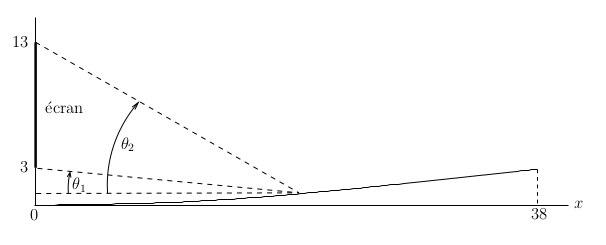
Nous voulons trouver la position dans la cinéma (i.e. la distance à partir du devant du cinéma) qui donne le plus grand angle de vision; c'est-à-dire, où \(\theta_2 - \theta_1\) est le plus grand.
Puisque \(\tan\) est une fonction croissante sur l'intervalle \([0,\pi/2[\), les valeurs de \(x\) pour lesquelles \(\theta_2-\theta_1\) atteint son maximum sont les valeurs de \(x\) pour lesquelles \(\tan(\theta_2 - \theta_2)\) atteint son maximum. Donc, nous allons chercher les valeurs de \(x\) pour lesquelles \(\tan(\theta_2 - \theta_1)\) atteint son maximum. Cela va légèrement simplifier les manipulations algébriques. Nous avons que
> restart: equ1:= tan(theta_1) = (3-0.002*x^2)/x; equ2:= tan(theta_2) = (13-0.002*x^2)/x;\[ \begin{split} & equ1 := \tan(theta\_1) = \frac{3 - 0.002 x^2}{x} \\ & equ2 := \tan(theta\_2) = \frac{13 - 0.002 x^2}{x} \end{split} \]
Il y a une formule d'addition bien connue pour la fonction tangente que nous apprenons à l'école secondaire. Plus précisément, nous avons que \(\tan(\theta_2 - \theta_1)\) est égale à
> tanSum := expand(tan(theta_2-theta_1));\[ tanSum := -\frac{-\tan(theta\_2) + \tan(theta\_1)} {1 + \tan(theta\_2)\,\tan(theta\_1)} \]
Si nous substituons les formules pour \(\tan(\theta_1)\) et \(\tan(\theta_2)\) que nous avons trouvées dans la formule ci-dessus, nous obtenons alors la fonction de \(x\) suivante.
> f:= simplify( subs( {equ1,equ2},tanSum) );
\[
f := \frac{10. \, x}{0.968\, x^2 + 4. \times 10^{-6}\,x^4 + 39.}
\]
La valeur de \(x\) pour laquelle \(f\) atteint son maximum est la distance de l'écran pour laquelle nous avons le plus grand angle de vision; c'est-à-dire, avec la plus grande valeur de \(\theta_2 - \theta_1\). Nous cherchons en premier les points critiques de \(f\) dans l'intervalle ouvert \(]0,38[\).
> crtPts := solve([simplify(diff(f,x))=0, 0 < x, x < 38],x);\[ crtPts := \{x = 6.345798111 \} \]
Nous calculons la valeur de \(f\) à ce point critique et aux extrémités de l'intervalle \([0,38]\).
> subs(crtPts[1],f); subs(x=0,f); subs(x=38,f);\[ \begin{split} & 0.8136991935 \\ & 0. \\ & 0.2629516591 \end{split} \]
Nous avons tous appris dans nos cours de calcul différentiel qu'une fonction continue sur un intervalle fermé \([a,b]\) qui est aussi dérivable sur l'intervalle ouvert \(]a,b[\) atteint son maximum absolu soit à un de ses points critiques dans l'intervalle \(]a,b[\) ou soit à une des extrémités de l'intervalle. Donc, le maximum absolu de \(f\) est atteint approximativement au point \(x = 6.345798111\). Puisque
> theta_1 := arctan(subs(crtPts[1],rhs(equ1))); theta_2 := arctan(subs(crtPts[1],rhs(equ2))); view:= theta_2 - theta_1; convert(view,degrees);\[ \begin{split} & theta\_1 := 0.4311900575 \\ & theta\_2 := 1.114228526 \\ & view := 0.6830384685 \\ & 39.13522148 \, degrees \end{split} \]
l'angle maximal de vision est approximativement \(0.6830384685\) radians ou \(39.13522148\) degrés. Il est intéressant de tracer le graphe de \(\theta_2 - \theta_1\) en fonction de \(x\) pour obtenir une meilleure compréhension de comment l'angle de vision varie par rapport à \(x\). Il est facile de tracer ce graphe avec Maple.
> theta_1:='theta_1'; theta_2:='theta_2';
plot(arctan(rhs(equ2)) - arctan(rhs(equ1)),x=0..38,
labels=['x','theta_2 - theta_1'], gridlines=true);
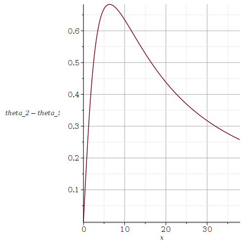
Exemple: Les groupes sanguins sont déterminés par trois allèles dénotés par les lettres A, B et O. Chaque individu possède une paire d'allèles qui détermine le groupe sanguin. Il y a six combinaisons d'allèles (i.e. gènes) qui donnent quatre groupes sanguins si on ignore le facteur Rh:
Puisque \( p_1 + p_2 + p_3 = 1\), nous avons seulement à trouver la valeur maximale et la valeur minimale de la fonction \(P_r\) définie par \( P_r(p_1,p_2) = P(p_1,p_2,1-p_1,-p_2) \) pour \( (p_1,p_2)\) dans le domaine
\[ D = \{ (p_1,p_2) : 0 \leq p_1,p_2 \leq 1 \text{ et } p_1 + p_2 \leq 1 \} \ . \]Nous avons appris dans nos cours de calcul différentiel que \(P_r\) atteint sa valeur maximale (resp. minimale) en un point de \(D\) car \(P_r\) est une fonction continue sur l'ensemble borné et fermé \(D\). Nous avons aussi appris dans nos cours de calcul différentiel que la valeur maximale (resp. minimale) est atteinte soit à un point critique de \(P_r\) à l'intérieur du domaine \(D\) ou soit à un point sur la frontière de \(D\) car \(P_r\) est dérivable dans \(D\).
> restart: with(LinearAlgebra): with(VectorCalculus): P := 2*p1*p2+2*p1*p3+2*p2*p3; Pr := subs(p3=1-p1-p2,P); plot3d(Pr,p1=0..1,p2=0..1,style=patchcontour,axes=boxed,labels=['p_1','p_2','P_r']);\[ \begin{split} & P := 2\,p1\,p2 + 2\,p1\,p3 + 2\,p2\,p3 \\ & Pr := 2\,p1\,p2 +2\,p1\,(1- p1 -p2)+2\,p2\,(1- p1 -p2) \end{split} \]
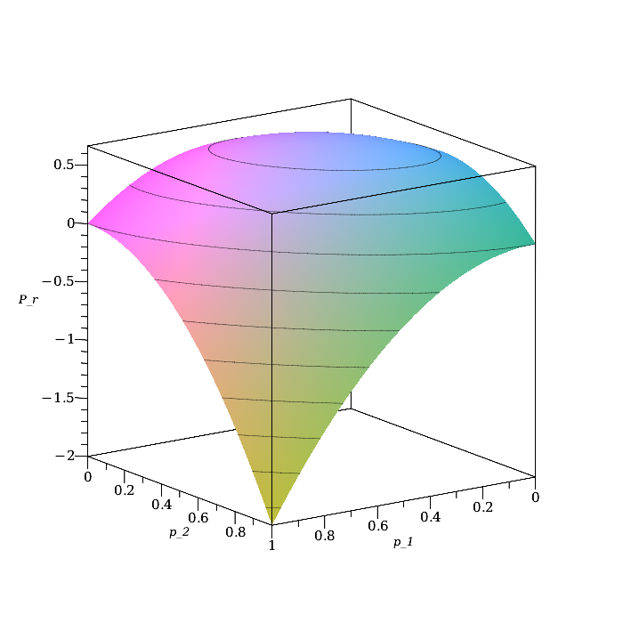
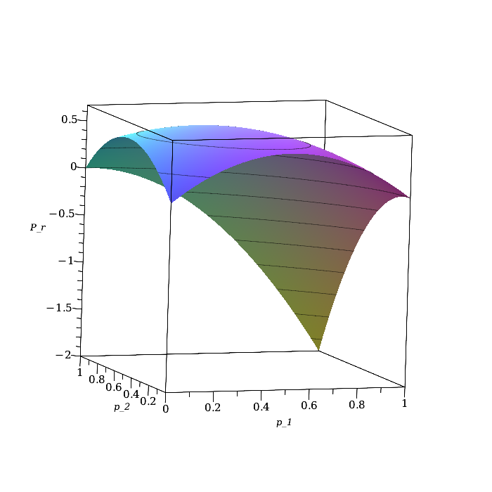
Le lecteur doit être prudent en regardant ces figures. Nous avons tracé le graphe de \(P_r\) pour \( 0 \leq p_1,p_2 \leq 1\) mais cela n'est pas le domaine \(D\) que l'on doit considérer. Nous avons tracé le graphe de \(P_r\) sur tout le rectangle car Maple ne peut pas faire autrement.
Il semble clair à partir des figures (nous avons fait à droite une rotation de la figure initiale à gauche) que le maximum absolu de \(P_r\) est atteint à un point critique à l'intérieur du domaine \(D\) et que le minimum absolu de \(0\) est atteint sur la frontière de \(D\). Nous ne pouvons pas toujours obtenir toute cette information simplement en regardant le graphe d'une fonction. Le graphe de la fonction que nous voulons étudier peut être très complexe. Pour notre exemple, nous procédons avec plus de rigueur (que nécessaire) pour illustrer la méthode générale. Nous débutons par la recherche des points critiques de \(P_r\) et, pour chacun d'eux, nous déterminons si c'est a minimum local, un maximum local ou un col.
> p := solve({diff(Pr,p1)=0,diff(Pr,p2)=0},{p1,p2});
H := Hessian(Pr,[p1,p2]);
Determinant(H); H(1,1);
M := subs(p,Pr)
\[
\begin{split}
& p := \left\{ p1 = \frac{1}{3} , p2 = \frac{1}{3} \right\} \\
& H := \begin{pmatrix} -4 & -2 \\ -2 & -4 \end{pmatrix} \\
& 12 \\
& -4 \\
& M := \frac{2}{3}
\end{split}
\]
Il y a un seul point critique en \( (1/3,1/3) \in D \) et c'est un maximum local car \(\det H(1/3.1/3) = 12 >0 \) et \( H(1,1) = -4 < 0\). C'est en fait le point où \(P_r\) atteint son maximum absolu de \(2/3\) car, comme nous allons voir, \( P_r(p_1,p_2) < 2/3 \) pour tous points sur la frontière du domaine \(D\).
Puisque \(p_r\) est invariant pour la réflexion par rapport à la droite \( p_1 = p_2 \), c'est-à-dire que \(P_r(x_1,x_2) = P_r(x_2,x_1)\), nous avons seulement à considérer \( S_1 = \{ (p_1,0) : 0 \leq p_1 \leq 1 \}\) et \( S_2 = \{ (p_1,p_2) : 0 \leq p_1 \leq 1 \text{ and } p_1 + p_2 = 1 \}\).
> Pr1 := subs(p2=0,Pr); Pr2 := subs(p2=1-p1,Pr); plot(Pr1,p1=0..1,gridlines=true,labels=['p_1','P_r']);\[ \begin{split} & Pr1 := 2\,p1\,(1-p1)\\ & Pr2 := 2\,p1\,(1-p1) \end{split} \]
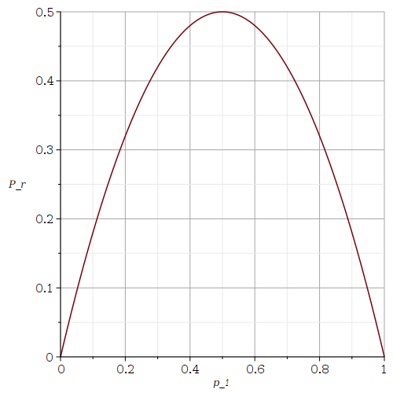
Nous déduisons de la figure ci-dessus que \(P_r\) est plus petit ou égal à \(1/2\) sur la frontière de \(S\). Ceci confirme notre énoncé précédent que nous avons un maximum absolu de \(2/3\) qui est atteint au point \( (1/3,1/3) \). De plus, le minimum absolu de \(0\) est atteint aux points \( (0,0), (0,1)\) et \( (1,0) \). En général, il est souvent requis de faire une analyse plus rigoureuse du comportement de la fonction sur la frontière de son domaine. Cependant, dans le cas présent, nous n'avons pas besoin d'être aussi rigoureux.
Exemple: Nous analysons la quantité d'énergie lumineuse provenant d'une ampoule qui est absorbée par une cellule photovoltaïque. Le premier genre de cellules que nous considérons est les cellules qui sont planaires et circulaires. En supposant que l'air n'absorbe pas d'énergie lumineuse (ce qui est raisonnable sur une courte distance), le flot total \(P\) d'énergie lumineuse par unité de temps qui traverse une sphère centrée sur une ampoule est indépendant du rayon \(r\) de la sphère. À l'aide de ce principe, nous obtenons que la densité du flot lumineux \(f\) (i.e. le flot lumineux par unité d'aire et unité de temps) à une distance \(r\) de la source lumineuse (l'ampoule) est \(P\) divisé par l'aire de la sphère de rayon \(r\); c'est-à-dire,
\[ f = \frac{3 P}{4\pi r^2} \]Cela veut dire que la densité de flot lumineux \(f\) est proportionnelle à l'inverse du carrée de la distance de la source lumineuse.
Soit \(\alpha\) l'angle entre le faisceau lumineux et la surface de la cellule photovoltaïque. l'énergie lumineuse absorbée par unité de surface au point où un faisceau lumineux touche la surface absorbante de la cellule est donnée par la composante de \(f\) perpendiculaire à la surface de la cellule.
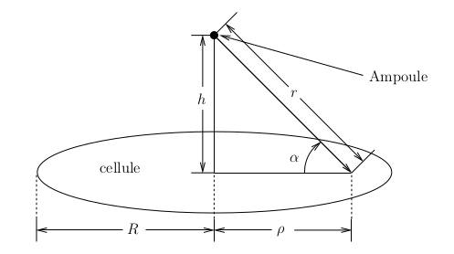
Cette composante perpendiculaire est \(f \sin(\alpha)\). Nous avons que \(\sin(\alpha) = h/\sqrt{h^2 + \rho^2}\) où \(\rho\) est la distance entre le point de contact d'un faisceau lumineux avec la surface de la cellule et l'axe perpendiculaire qui relie le centre de la cellule à la source lumineuse, et \(h\) est la distance entre ce point de contact et la source lumineuse. La densité d'énergie lumineuse absorbée par la surface de la cellule au point de contact d'un faisceau lumineux avec la surface de la cellule est donc donnée par \[ E(\rho) = \frac{3\, P\, h}{4\pi (\rho^2+h^2)^{3/2}} \ . \] Nous pouvons tracer le graphe de \(E\) pour \(P=100, h=15\) et \(R=20\).
> restart: f:=3*P/(4*Pi*r^2);\[ f := \frac{3 P}{4 \pi r^{2}} \]
> assume(rho>=0, R>=0, h>=0): > f:=subs(r=sqrt(rho^2+h^2),f);\[ f := \frac{3 P}{4 \pi \left(h{\scriptsize \sim}^{2} +\rho{\scriptsize \sim}^{2}\right)} \]
> E:=f*(h/sqrt(h^2+rho^2));\[ E := \frac{3 P h{\scriptsize \sim}}{4 \pi \left(h{\scriptsize \sim}^{2} +\rho{\scriptsize \sim}^{2}\right)^{\frac{3}{2}}} \]
> E1:=subs({P=100,h=15},E);
\[
E1 := \frac{1125}{\pi \left(\rho{\scriptsize \sim}^{2}+225\right)^{\frac{3}{2}}}
\]
> plot(E1,rho=0..20, labels=['rho','E']);
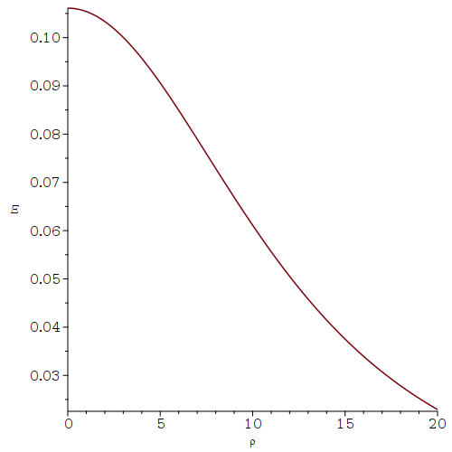
Le symbole \(\scriptsize \sim\) après les variables \(h\) et \(\rho\) indique qu'elles ne sont pas négatives.
L'énergie lumineuse totale absorbée par unité de temps par la cellule de rayon \(R\) est donnée par l'intégrale double en coordonnées polaires suivante.
\[ T(R,h) = \int_0^{2\pi} \int_0^R E(\rho) \rho\, \text{d}\rho \, \text{d}\theta = \int_0^R \frac{3 P h\,\rho}{2 (\rho^2+h^2)^{3/2}} \,\text{d}\rho \ . \]Si le flot total \(P\) et la distance \(h\) sont constants, alors quel est le comportement de l'énergie lumineuse totale qui est absorbée par la cellule en fonction de son rayon \(R\)? Pour répondre à cette question, nous supposons que \(P=100\) et \(h=15\).
> TE := int(2*Pi*rho *E, rho=0..R);\[ TE := \frac{3 P \left(\sqrt{R{\scriptsize \sim}^{2}+h{\scriptsize \sim}^{2}} -h{\scriptsize \sim} \right)}{2 \sqrt{R{\scriptsize \sim}^{2} +h{\scriptsize \sim}^{2}}} \]
> TE1 := subs({P=100,h=15},TE);
plot(TE1,R=0..100, labels=['R','T']);
\[
TE1 := \frac{150 (\sqrt{R{\scriptsize \sim}^{2}+225}-15)}
{\sqrt{R{\scriptsize \sim}^{2}+225}}
\]
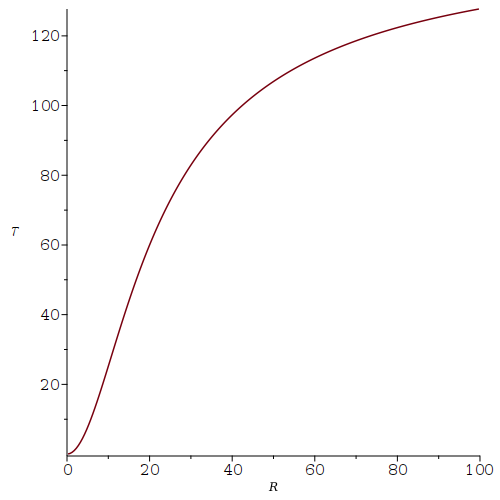
Nous avons que l'énergie lumineuse totale qui est absorbée par la cellule converge vers 150 lorsque \(R \to \infty\).
> limit(TE1,R=infinity);\[ 150 \]
Si maintenant le flot total \(P\) et le rayon \(R\) sont constants, alors quel est le comportement de l'énergie lumineuse totale qui est absorbée par la cellule en fonction de la distance \(h\)? Pour répondre à cette question, nous supposons que \(P=100\) et \(R=10\).
> TE2 := subs({P=100,R=10},TE);
plot(TE2,h=0..100, labels=['h','T']);
\[
TE2 := \frac{150 (\sqrt{h{\scriptsize \sim}^{2}+100}-h{\scriptsize \sim})}
{\sqrt{h{\scriptsize \sim}^{2}+100}}
\]
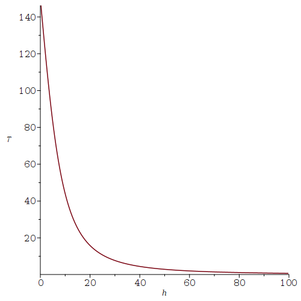
Nous avons que l'énergie lumineuse totale qui est absorbée par la cellule converge vers 0 lorsque \(h \to \infty\).
> limit(TE2,h=infinity);\[0\]
Nous considérons maintenant une cellule photovoltaïque qui est la surface de révolution d'une courbe \(z=g(\rho)\) autour de l'axe des \(z\). Soit \(h\) la distance entre l'ampoule et l'origine dans le plan \(\rho,z\) illustré ci-dessous.
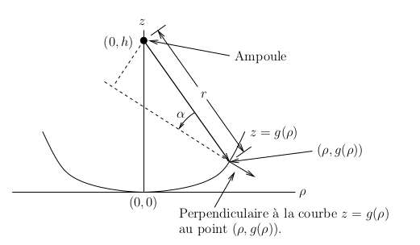
Soit \(\alpha\) l'angle entre le faisceau lumineux et la droite perpendiculaire à la surface de la cellule au point où le faisceau lumineux touche la cellule photovoltaïque. La densité du flot lumineux au point \((\rho,g(\rho))\) dans le plan \(\rho,z\) est donnée par
\[ E(\rho) = \frac{3\, P\, (h-g(\rho)+\rho g'(\rho))} {4\pi ((h-g(\rho))^2+\rho^2)^{3/2}\sqrt{1+(g'(\rho))^2}} \]car la composante de \(f\) perpendiculaire à la surface de la cellule est \(f \cos(\alpha)\) avec \(r = \sqrt{(h-g(\rho))^2+\rho^2}\) et
\[ \cos(\alpha) = \frac{ ((0,h)- (\rho,g(\rho)) )\cdot (-g'(\rho), 1)} {\|(0,h)- (\rho,g(\rho))\|\,\|(g'(\rho),1)\|} = \frac{\rho g'(\rho) + h - g(\rho)} {\sqrt{(h-g(\rho))^2+\rho^2} \, \sqrt{1 + (g'(\rho))^2}} \ . \]Nous considérons une cellule parabolique donnée par \(z=g(\rho) = k \rho^2\). Nous allons comparer la densité d'énergie lumineuse absorbée par la surface de la cellule planaire précédente et la surface de la nouvelle cellule parabolique. Nous assumons que \(P=100, h=15\) et \(k=1/2\), et traçons le graphe de la densité d'énergie lumineuse \(E\) absorbée par chacune des cellules en fonction de \(h\).
> ff:=3*P/(4*Pi*(rho^2+(h - g(rho))^2));\[ ff := \frac{3 P}{4 \pi \left(\rho{\scriptsize \sim}^{2} +\left(h{\scriptsize \sim} -g(\rho{\scriptsize \sim})\right)^{2}\right)} \]
> with(LinearAlgebra): v1 := Vector([-rho,h-g(rho)]): v2 := Vector([-diff(g(rho),rho),1]): ca := DotProduct(v1,v2)/(norm(v1,2) * norm(v2,2));\[ ca := \frac{\rho{\scriptsize \sim} \left(\frac{d}{d \rho{\scriptsize \sim}}g (\rho{\scriptsize \sim} ) \right) + h{\scriptsize \sim} - \overline{g (\rho{\scriptsize \sim})}} {\sqrt{\rho{\scriptsize \sim}^{2}+ | -h{\scriptsize \sim} +g(\rho{\scriptsize \sim}) |^{2}} \, \sqrt{1+\left| \frac{d}{d \rho{\scriptsize \sim}} g(\rho{\scriptsize \sim}) \right|^{2}}} \]
> assume(k>=0): cap := eval(subs(g(rho)=k*rho^2,ca));\[ cap := \frac{k \,\rho{\scriptsize \sim}^{2}+h{\scriptsize \sim}} {\sqrt{\rho{\scriptsize \sim}^{2}+{| -k \,\rho{\scriptsize \sim}^{2} +h{\scriptsize \sim} |}^{2}}\, \sqrt{4 k^{2} \rho{\scriptsize \sim}^{2}+1}} \]
> EE := f*cap;\[ EE := \frac{3 P \left(k \,\rho{\scriptsize \sim}^{2} +h{\scriptsize \sim} \right)} {4 \pi \left(h{\scriptsize \sim}^{2} +\rho{\scriptsize \sim}^{2}\right) \sqrt{\rho{\scriptsize \sim}^{2} +{| -k \,\rho{\scriptsize \sim}^{2}+h{\scriptsize \sim} |}^{2}}\, \sqrt{4 k^{2} \rho{\scriptsize \sim}^{2}+1}} \]
> EE1 := subs({P=100,h=15,k=1/2},EE);
plot([E1,EE1],rho=0..30, labels=['rho','E']);
\[
EE1 := \frac{75 (\frac{\rho{\scriptsize \sim}^{2}}{2}+15)}
{\pi (\rho{\scriptsize \sim}^{2}+225)
\sqrt{\rho{\scriptsize \sim}^{2}+{{|
-\frac{\rho{\scriptsize \sim}^{2}}{2}+15|}}^{2}}\,
\sqrt{\rho{\scriptsize \sim}^{2}+1}}
\]
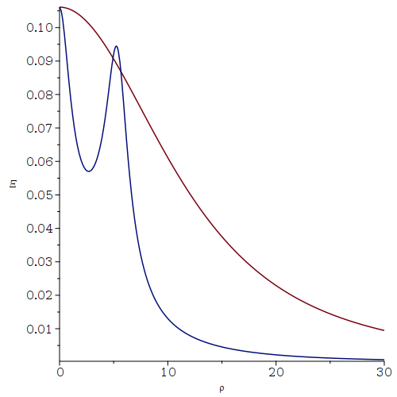
L'énergie lumineuse totale qui est absorbée par unité de temps par la cellule parabolique avec \(|\rho| \leq R\) est donnée par
\[ T = \int_0^R 2 \pi E(\rho)\, \rho \sqrt{1+g'(\rho)^2}\,\text{d}\rho = \int_)^R \frac{3\, P\, \rho\, (h-g(\rho)+\rho g'(\rho))}{2 ((h-g(\rho))^2+\rho^2)^{3/2}}\, \text{d}\rho \ , \]où \(2 \pi \rho \,\sqrt{1+g'(\rho)^2}\,\text{d}\rho\) est l'élément d'aire d'une surface de révolution comme il est enseigné dans les cours de calcul différentiel et intégral.
Nous répétons, pour la cellule parabolique définie par \(z=g(\rho) = \rho^2/2\), l'analyse que nous avons fait ci-dessus pour le comportement de l'énergie lumineuse totale qui est absorbée par la cellule plane, et nous comparons les résultats pour ces deux cellules. Nous supposons en premier que le flot total \(P=100\) et la distance \(h=15\), et traçons le graphe de \(T\) en fonction de \(R\).
> TTE := int(2*Pi*EE*rho*sqrt(1+rho^2), rho=0..R):
TTE1 := subs({P=100,h=15,k = 1/2},TTE):
plot([TE1,TTE1],R=0..100, labels=['R','T']);
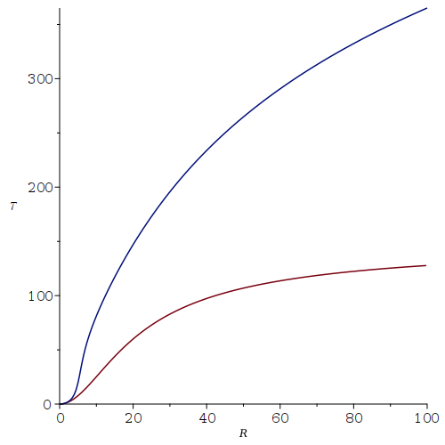
Nous n'avons pas affiché la formule pour TTE1 car c'est une longue formule qui inclus les fonctions hyperboliques inverses arctanh() et arcsinh().
> limit(TTE1,R=infinity);\[\infty\]
Nous supposons maintenant que le flot total \(P=100\) et \(R=10\), et traçons le graphe de \(T\) en fonction de \(h\).
> TE2 := seq([t, evalf(subs({P = 100, R = 10, h = t, k = 1/2}, TE))], t = 0 .. 100):
TTE2 := seq([t, evalf(subs({P = 100, R = 10, h = t, k = 1/2}, TTE))], t = 0 .. 100):
plot({[TE2],[TTE2]}, labels=['h','T']);
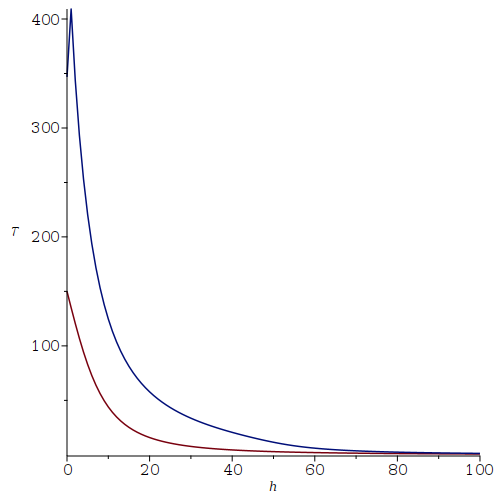
> limit(TTE2,h=infinity);\[0\]
Note: Nous nous serions attendu que les commandes suivantes
> TTE2 := subs({P=100,R=10,k = 1/2},TTE):
plot([TE2,TTE2],h=0..100, labels=['h','T']);
aient généré la figure ci-dessus. Malheureusement,
la fonction plot() a fait
planter
Maple sur notre ordinateur.